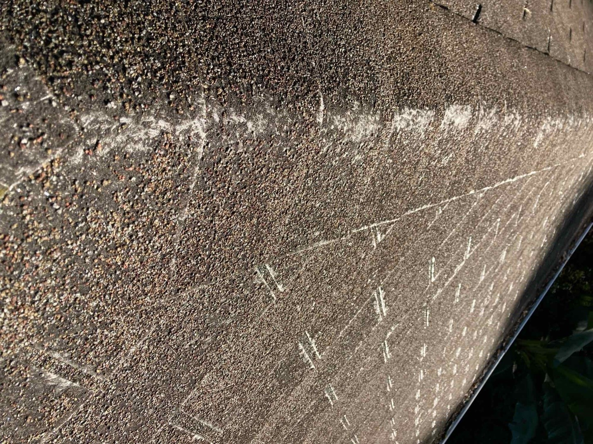

Journey
I wanted to share my experience and data with those who are looking for more detail on solar roofs and how things are going with mine after a year. If you find this helpful and decide to install a solar roof please use my referral link https://ts.la/paul14226 and we can both get a credit with Tesla. The Tesla Solar Roof is a very nice product. My personal preference is to avoid crappy products and that meant asphalt shingles were not an option for me.

What Does a 32 Year Old Roof Look Like?
Around 2015 it became apparent I needed a new roof, and I started researching other alternatives to asphalt shingles, a nasty and ugly product. Also, the water coming off asphalt shingles pick up toxins that I use to water some vegetable plants, another deterrent. Originally, I was very interested in metal roofing but would need to be something that would get approved by the HOA. If I ever decided to go solar I didn’t like the idea adding potential areas for leaks caused by all the support for the panels. Back then there were a few companies that had solar shingles but they did not integrate with the roof. It was very ugly and the panels still stuck out from the rest of the roof. When I saw the Tesla solar roof, I was very interested.
On June 13, 2017 I placed $1,000 deposit on a Tesla Solar roof. This was about 4 weeks after they first opened up reservations. As with other products from Tesla, there was no estimated cost and they had four conceptual design options. Presently they only have one design available. After paying my deposit, over the next 4.5 years I worried if my current roof was going to make it and started doing attic inspections every 6 months looking for leaks. The picture above is the day they ripped off my roof. As you can see, the roof was way past its intended life. During the wait, I did have to replace some shingles and resealed around vents as well as some minor preventive measures. As it turned the decking was in great shape. Only two pieces needed to be replaced.
It was a roller coaster ride. In early 2020 I received an email from Tesla they weren’t coming to North Carolina any time soon because of issues with the electric company, then finally receiving an email in February of 2021 that the Tesla Solar Roof was finally being offered in North Carolina. Time was running out on the 26% tax credit so I thought but more importantly I started worrying about how much time my roof had left. I didn’t need any more delays. Dumb luck had it, I actually was able to get 30% because it was installed in 2022.
From the beginning, everything is done online through your Tesla account. There is a Solar Roof Purchase Agreement that needs to be signed. I had three of them but that may not be typical. There was some disorganization at the beginning, some growing pains being newer to the East Coast. I live in an HOA and needed their approval. It could have been worse but as it turns out in North Carolina and HOA can’t deny you from having solar. I had to upload pictures of my electrical meter, garage walls for the Powerwall, and electrical panel. A couple months before the installation started, Tesla came out and took some slope measurements and verified the installation feasibility. The last thing they needed was a Homeowners insurance declaration page. They kept rejecting what I sent them and it took a phone call to figure out exactly what they were looking for. My insurance was State Farm.
The week of January 3, 2022 a porta john and dump container arrived so you will not be able to use your driveway during the installation, a couple weeks. On Friday, the first material arrived and the installers showed up on Monday, January 7, 2022. There were no trained installers in NC and the Tesla installers came down from Pittsburg. These guys had lots experience and were extremely professional. As it turned out the roof design changed several weeks before and I still didn’t know what I bought as far as kWh system or a final price. I chalked the confusion on being the 3rd installation in North Carolina and all the new people working on the project. The installation should have been done in a week but the guys kept running out of material. This was 2022 during COVID, the time that shortages of everything were going on… including truck drivers and the previous mentioned new people in local Tesla office not checking up on deliveries.